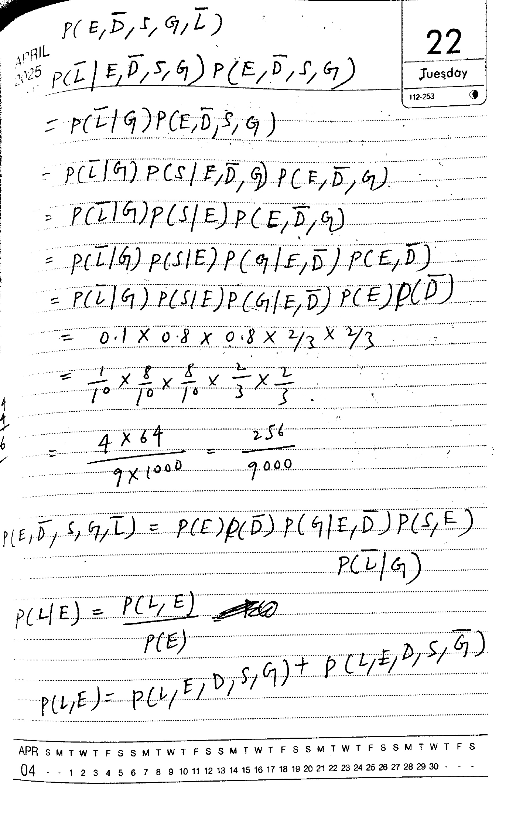
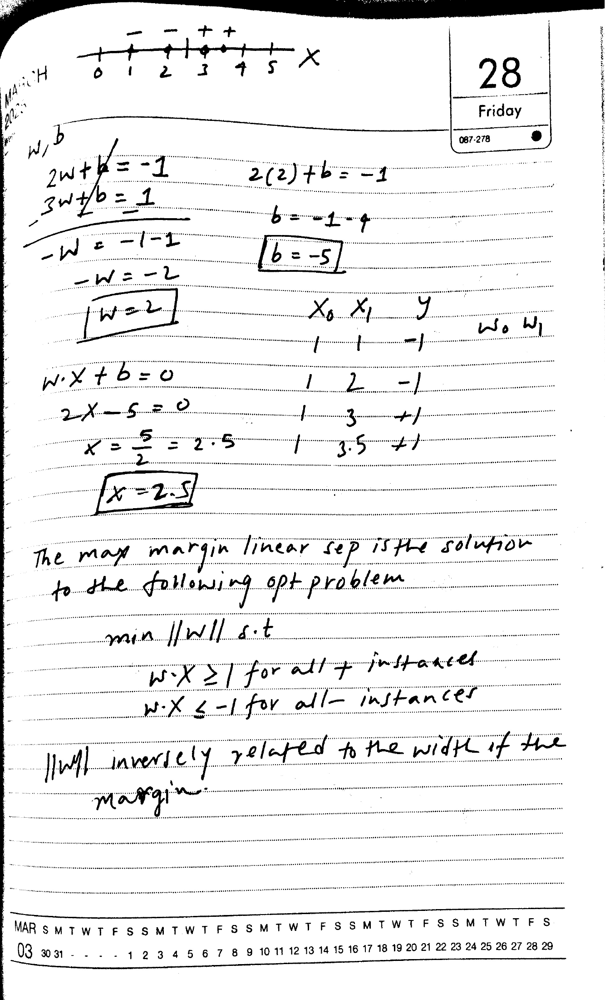
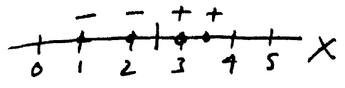
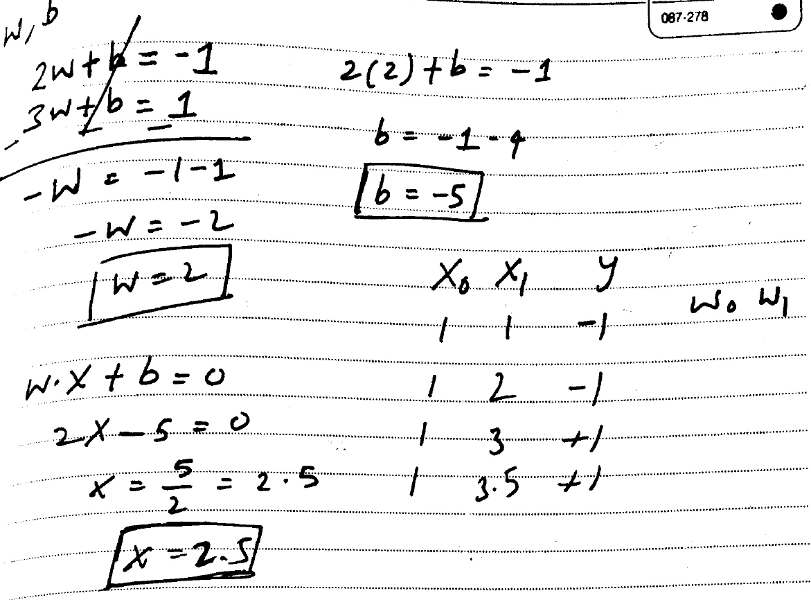
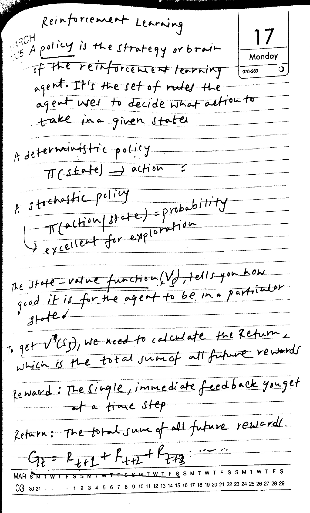
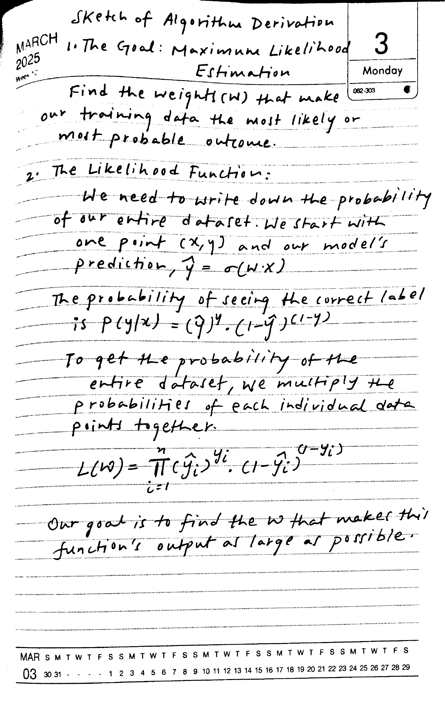
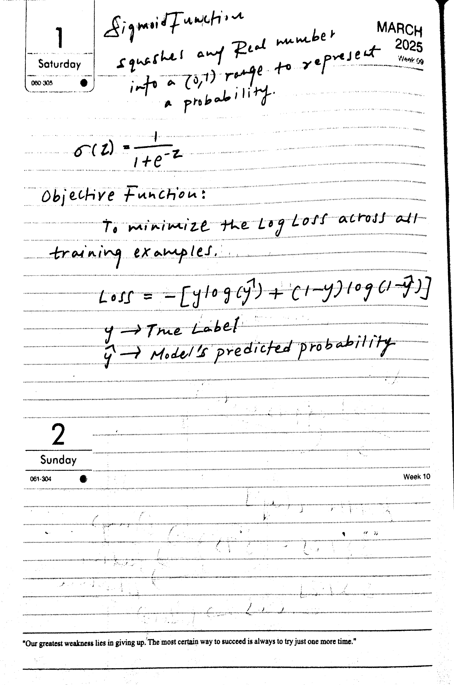

Original, SDK output and GLM output on the same five page images. These are raw model results, not corrected transcriptions. SDK image regions show original crops, not selectable recognized text. Page timings measure different operations and are not a controlled speed comparison.

9.14 s, process wall time
$P(E, \overline{D}, S, G, \overline{L})$
$P(\overline{L}|E, \overline{D}, S, G) P(E, \overline{D}, S, G)$
$= P(\overline{L}|G) P(E, \overline{D}, S, G)$
$= P(\overline{L}|G) P(S|E, \overline{D}, G) P(E, \overline{D}, G)$
$= P(\overline{L}|G) P(S|E) P(E, \overline{D}, G)$
$= P(\overline{L}|G) P(S|E) P(G|E, \overline{D}) P(E, \overline{D})$
$= P(\overline{L}|G) P(S|E) P(G|E, \overline{D}) P(E) P(\overline{D})$
$= 0.1 \times 0.8 \times 0.8 \times \frac{2}{3} \times \frac{2}{3}$
$= \frac{1}{10} \times \frac{8}{10} \times \frac{8}{10} \times \frac{2}{3} \times \frac{2}{3}$
$= \frac{4 \times 64}{9 \times 1000} = \frac{256}{9000}$
$P(E, \overline{D}, S, G, \overline{L}) = P(E)P(\overline{D})P(G|E, \overline{D})P(S, E)$
P (L | E) = \frac{P (L , E)}{P (E)}11.17 s, request time
$P(E, \bar{D}, S, G, \bar{L})$
$P(\bar{L} | E, \bar{D}, S, G) P(E, \bar{D}, S, G)$
$= P(\bar{L} | G) P(E, \bar{D}, S, G)$
$= P(\bar{L} | G) P(S | E, \bar{D}, G) P(E, \bar{D}, G)$
$= P(\bar{L} | G) P(S | E) P(E, \bar{D}, G)$
$= P(\bar{L} | G) P(S | E) P(G | E, \bar{D}) P(E, \bar{D})$
$= P(\bar{L} | G) P(S | E) P(G | E, \bar{D}) P(E) P(\bar{D})$
$= 0.1 \times 0.8 \times 0.8 \times 2/3 \times 2/3$
$= \frac{1}{10} \times \frac{8}{10} \times \frac{8}{10} \times \frac{2}{3} \times \frac{2}{3}$
$= \frac{4 \times 64}{9 \times 1000} = \frac{256}{9000}$
$P(E, \bar{D}, S, G, \bar{L}) = P(E) P(\bar{D}) P(G | E, \bar{D}) P(S, E)$
$P(\bar{L} | G)$
$P(L | E) = \frac{P(L, E)}{P(E)}$
$P(L, E) = P(L, E, D, S, G) + P(L, E, D, S, \bar{G})$
5.31 s, process wall time
MARCH 2025


The max margin linear sep is the solution to the following opt problem
min ||W|| s.t
\[w \cdot x \geq 1 \text{ for all + instances}\]
\[w \cdot x \leq -1 \text{ for all - instances}\]
|w| inversely related to the width of the margin.5.11 s, request time
2w + b = -1
3w + b = 1
-W = -1 - 1
-W = -2
W = 2
2(2) + b = -1
b = -1 - 4
b = -5
$x_0, x_1, y$
1 1 -1 $w_0, w_1$
$w \cdot x + b = 0$
$2x - 5 = 0$
$x = \frac{5}{2} = 2.5$
$x = 2.5$
The max margin linear sep is the solution to the following opt problem
min ||w|| s.t.
$w \cdot x \ge 1$ for all instances
$w \cdot x \le -1$ for all instances
||w|| inversely related to the width of the margin.
8.36 s, process wall time
Reinforcement Learning
MARCH
125 A policy is the strategy or brain
of the reinforcement learning
agent. It's the set of rules the
agent uses to decide what action
take in a given state
A deterministic policy
$\pi(\text{state}) \to \text{action}$
A stochastic policy
$\pi(action | state) = probability$
excellent for exploration
The state-value function $(V_{s})$, tells you how good it is for the agent to be in a particular state.
To get $V^{\pi}(s_{3})$, we need to calculate the Return, which is the total sum of all future rewards
reward : The single, immediate feedback you get at a time step
Return: The total sum of all future rewards.
$G_{t} = R_{t+1} + R_{t+2} + R_{t+3}$ ...
MAR5.10 s, request time
Reinforcement Learning
A policy is the strategy or brain of the reinforcement learning agent. It's the set of rules the agent uses to decide what action to take in a given state.
A deterministic policy
$$\pi(\text{state}) \rightarrow \text{action}$$
A stochastic policy
$$\pi(\text{action}|\text{state}) = \text{probability} \text{ excellent for exploration}$$
The state-value function $V_s$ tells you how good it is for the agent to be in a particular state.
To get $V^T(s_3)$, we need to calculate the return, which is the total sum of all future rewards.
Reward: The single, immediate feedback you get at a time step
Return: The total sum of all future rewards.
$$G_t = R_{t+1} + R_{t+2} + R_{t+3}$$
8.68 s, process wall time
Sketch of Algorithm Derivation
1. The Goal: Maximum Likelihood Estimation
Monday
Find the weights (w) that make our training data the most likely or most probable outcome.
2. The Likelihood Function:
We need to write down the probability of our entire dataset. We start with one point $(x, y)$ and our model's prediction, $\hat{y} = \sigma(w \cdot x)$
The probability of seeing the correct label is $p(y|x) = (\hat{y})^{y} \cdot (1 - \hat{y})^{(1 - y)}$
To get the probability of the entire dataset, we multiply the probabilities of each individual data points together.
\[
L(w)=\prod_{i=1}^{n}(\hat{y}_{i})^{y_{i}}.(1-\hat{y}_{i})^{(1-y_{i})}
\]
Our goal is to find the w that makes this function's output as large as possible.9.41 s, request time
Sketch of Algorithm Derivation
1. The Goal: Maximum Likelihood Estimation
Find the weights $w$ that make our training data the most likely or most probable outcome.
2. The Likelihood Function:
We need to write down the probability of our entire dataset. We start with one point $(x, y)$ and our model's prediction, $\hat{y} = \sigma(w \cdot x)$
The probability of seeing the correct label is $P(y|x) = (\hat{y})^y \cdot (1 - \hat{y})^{1-y}$
To get the probability of the entire dataset, we multiply the probabilities of each individual data points together.
$$L(w) = \prod_{i=1}^{n} (\hat{y}_i)^y \cdot (1 - \hat{y}_i)^{1-y}$$
Our goal is to find the $w$ that makes this function's output as large as possible.
5.87 s, process wall time
Sigmoid function MARCH
squashes any Real number 2025
into a (0,1) range to represent Week 59
a probability.
$$
\sigma(z)=\frac{1}{1+e^{-z}}
$$
Objective Function:
To minimize the Log Loss across all training examples.
\[
\begin{array}{l} \text{Loss} = - [ y \log (\hat{y}) + (1 - y) \log (1 - \hat{y}) ] \\ y \to \text{True Label} \\ \hat{y} \to \text{Model's predicted probability} \end{array}
\]
2
Sunday
"Our greatest weakness lies in giving up. The most certain way to succeed is always to try just one more time."9.67 s, request time
Sigmoid Function
squashes any Real number
into a (0,1) range to represent
a probability.
$$\sigma(z) = \frac{1}{1 + e^{-z}}$$
Objective Function:
To minimize the Log Loss across all
training examples.
$$\text{Loss} = -[y \log(y^2) + (1-y) \log(1-y)]$$
$$y \rightarrow \text{True Label}$$
$$\hat{y} \rightarrow \text{Model's predicted probability}$$
2
Sunday
061-304
"Our greatest weakness lies in giving up. The most certain way to succeed is always to try just one more time."